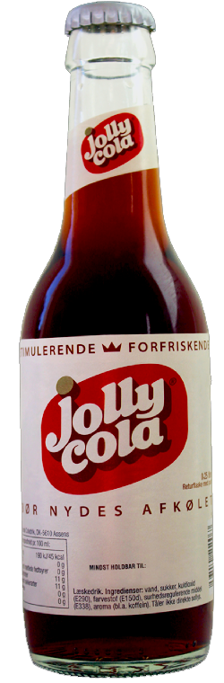
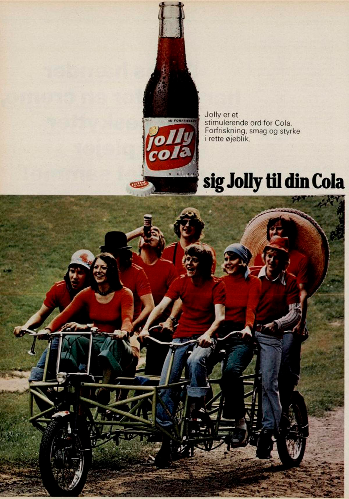

62 år med Jolly Cola
D. 1. juli. 1959 blev Jolly Cola introduceret til det danske colamarked af Dansk Coladrik for at konkurrere med de Amerikanske brands. Dansk Coladrik var et fælles projekt blandt 18 bryggerier og mineralvandsfabrikker i Danmark.
Det store Amerikanske brand Coca Cola havde haft lidt succes tilbage i 30’erne men nåede aldrig at slå igennem fordi 2. verdenskrig udbrød, og der kom rationering af sukker samt en afgift på cola i Danmark. Det gjorde cola lige så dyr som øl, og gjorde at Coca Cola havde svært ved at trænge ind på det danske marked. Afgiften kom af lobbyisme fra danske bryggerier, og mineralvandsproducenter og virkede som planlagt. Men i 1959 blev denne afgift fjernet og kampen om colamarkedet i Danmark begyndte.

Billede taget fra sjobeck.dk
Dansk Coladrik kopierede hele deres organisation efter Coca Colas og havde målet om, at deres cola ville være danskernes fortrukne.
Dansk Coladriks plan virkede, og i juli 1959 alene solgte de 9 millioner flasker cola, sammenlignet med Coca Cola der solgte 5 millioner flasker. Da markedet stabiliserede sig, var ca. hver fjerde sodavand solgt i Danmark var en cola, og omkring 40% af de colaer der blev solgt, var en Jolly Cola.
Der er flere forklaringer til Jolly Colas succes. Den største faktor, var dog Dansk Coladriks netværk, kendskab til det danske marked og distributionssystem. En anden faktor var at Coca Cola også først i 1960’erne kunne findes i hele Danmark. Før det var det kun i storbyerne, man kunne finde det Amerikanske brand.
Jolly Cola blev også markedsført som ”den store cola”. Flasken indeholdt nemlig 25 cl., hvorimod Coca Colas flasker indeholdt 19 cl. Dette var også vigtigt for danskerne, da cola blev anset for at være et luksuriøst produkt. Senere i 60’erne havde Jolly Cola 60% af det danske colamarked.
Carlsberg havde aktiemajoriteten i Dansk Coladrik indtil 1997, hvor de solgte den til Albani. 6 år senere i 2003 får Vestfyen Bryggeri over halvdelen af aktierne og relancerer den danske cola. Jolly Cola udgør 25% af colaerne solgt i Coop Danmark i januar 2004, og får i 2005 Jolly Time, Jolly Orange og Jolly Energi, som nye varianter på markedet. I 2011 introducerer Vestfyens Bryggeri Jolly Kildevand, Jolly Danskvand og Jolly Danskvand Citrus til det danske marked.

Billede taget fra classic.samvirke.dk
”Sig Jolly til din cola” er sloganet Jolly Cola var kendt på tilbage i 1959. Det blev på 50-års jubilæet i 2009 ændret til ”Free your taste” og siden hen har der stået ”En Ægte Dansk Original” på colaen. Vestfyens Bryggeri relancerede colaen endnu engang i 2014 med Jolly Colas stil fra 80’erne. Her benyttede man sig af den samme etikette, samt det gamle slogan ”Sig Jolly til din cola”.